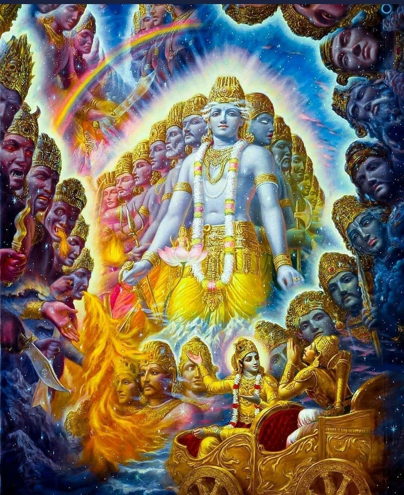

HinduismHinduism, one of the world's oldest religions, originated in the Indus Valley Civilization around 2500-1500 BCE. It developed through a blend of cultural and spiritual traditions, including the Vedic religion of the Aryans, who migrated to India around 1500 BCE. The Vedas, composed during this period, are Hinduism's oldest sacred texts. Hindus worship many gods and goddesses, each representing different aspects of the divine. Key deities include Brahma (The Creator) symbolized by the lotus, Vedas, and prayer beads. Vishnu (The Preserver) recognized by the conch, discus, lotus, and mace. Shiva (The Destroyer) Identified by the trident, drum, serpent, and third eye. Lakshmi (Goddess of Wealth) associated with the lotus, gold coins, and elephants. Saraswati (Goddess of Knowledge) Represented with the veena, books, and a swan. Ganesha (Remover of Obstacles) known for his elephant head and symbols like the broken tusk and modaka. Hanuman (The Monkey God) depicted with a mace, mountain, and a heart showing Rama and Sita. The Potential gods they may be related to from Scripture
Shiva as the destroyer parallels the Greek god Apollo, mentioned as the Destroyer in Revelation, and deities of destruction like the Canaanite god Resheph. In occult traditions, figures such as Baphomet, often depicted with elements symbolizing duality and transformation, echo Shiva’s role in balancing creation and destruction. The Egyptian god Set, associated with chaos and disorder, also shares similarities with Shiva's destructive aspect, highlighting the transformative power of destruction in both ancient and modern esoteric beliefs. Lakshmi's association with wealth and prosperity can be compared to the worship of Mammon, mentioned in the New Testament as a symbol of greed and material wealth. In Mesopotamian mythology, the goddess Ishtar, associated with fertility, love, and war, also symbolized abundance and prosperity. In the occult, the pursuit of wealth and material success is often symbolized by figures like Mammon, reflecting the enduring human fascination with material prosperity and its spiritual implications. Saraswati's association with knowledge can be linked to the ancient pursuit of wisdom in various cultures, such as the worship of Thoth in Egyptian mythology. Thoth, like Saraswati, was associated with wisdom and writing. In occult traditions, Hermes Trismegistus represents the pursuit of esoteric knowledge and the merging of spiritual and scientific wisdom, reflecting Saraswati's role in imparting intellectual and artistic insights. Ganesha's elephant head can be compared to the apocryphal account in the Book of Jasher, where those who tried to kill God at the Tower of Babel became like apes and elephants. This story aligns with the appearance of Ganesha and the elephant-headed god Airavata in Hindu mythology. In the occult, animal-headed deities like the Egyptian gods Anubis (jackal-headed) and Thoth (ibis-headed) symbolize the blending of human and animal traits, representing various aspects of wisdom, protection, and transformation. Hanuman's monkey form can be compared to the transformation mentioned in the Book of Jasher. In Mesopotamian mythology, gods like Enki were often associated with animals, emphasizing their connection to nature and their protective roles. In the occult, animal symbolism is prevalent, with animals representing various spiritual qualities and powers. Hanuman’s role as a loyal servant mirrors the worship of intermediary spirits or deities in many ancient cultures, who acted as messengers or protectors. Practices in the Western worldThe Kundalini ActivationComing from a Christian background, I strive to make sense of the spiritual forces described in other religious traditions, using both the Holy Scriptures and my personal observations of religious practices and deities’ characteristics. Through this lens, I perceive the deities in Hinduism not as the supreme creators or destroyers of the universe, despite titles that may suggest such roles, but rather as spiritual entities with knowledge and influence in creation. These beings, in my view, seek flexible worshippers and offer enlightenment or insight to those who honor them through spiritual practices. Living in the Western world, I have noticed that many followers of Eastern spiritual traditions, particularly those in the West, are often heavily influenced by psychedelic drugs and have only a superficial understanding of the religious context. A small percentage of these individuals are familiar with the scriptures, adhering to the practices as instructed by their traditions. However, the majority reframe these deities as manifestations of energy, which they believe can be harnessed for personal enlightenment and creativity. This trend can even be observed in influential figures like Steve Jobs, who sought spiritual inspiration in India before founding Apple. In particular, the concept of Kundalini activation is one of the most prominent practices in the Western spiritualist community. Kundalini, rooted in Tantric traditions of Shaivism and Shaktism, refers to a primal energy believed to reside at the base of the spine, coiled like a serpent. The goal of traditional Kundalini practice is to awaken this energy through methods such as Yoga, meditation, and breathing techniques, guiding it upwards through the body's chakras to achieve spiritual enlightenment or "samadhi." 
While this practice has deep religious significance in its original context, it has taken on new forms in the West, often stripped of its theological roots. Instead, it is frequently associated with personal growth, healing, and enhanced states of consciousness. Academic research supports the psycho-spiritual benefits of Kundalini Yoga, showing that it can help individuals release emotional trauma, reduce stress, and achieve mental clarity. Studies also suggest positive effects on physical well-being, including improved immune function, vitality, and stress reduction(SpringerLink)(Oxford Academic). Despite its widespread popularity in Western cultures, much of Kundalini activation’s modern use reflects a broader cultural adaptation, focusing on its benefits for creativity and inspiration rather than strict religious adherence. This reinterpretation often disconnects the practice from its original religious scriptures, which prescribe specific ways of worshipping these deities and accessing their knowledge. Instead, many practitioners in the West see it as a form of energy they can tap into for their personal gain(The Enlightenment Journey). In this context, it seems that these spiritual forces are actively seeking host bodies to fulfill their purposes, offering enlightenment, creativity, and even fame in exchange for commitment to practices such as Yoga and meditation. However, it is crucial to approach such spiritual practices with caution, particularly for individuals with mental health conditions, as the psychological effects of Kundalini activation can be intense and unpredictable(SpringerLink). The issue of redefining spiritual practices in the West is particularly prevalent, especially when it comes to Hinduism and other ancient traditions. People often attempt to modify these practices to fit their personal beliefs or needs, thinking that they can alter the original meaning and purpose of the rituals. While these redefined practices may yield results, the fundamental nature of the gods and goddesses involved remains unchanged. The practice of Kundalini, for example, shares significant similarities with Hermeticism, an ancient philosophical system rooted in Greek and Egyptian spiritual traditions. Kundalini energy is often depicted as a serpent ascending through the chakras, a powerful force that corresponds to the symbolism of the Caduceus, a staff carried by Hermes in Greek mythology. Hermes Trismegistus, a figure who combines the characteristics of the Greek god Hermes and the Egyptian god Thoth, is closely associated with enlightenment and wisdom. The imagery of the Caduceus, with its intertwined serpents, mirrors the Kundalini force, further connecting these spiritual systems 
This led me to the conclusion that these deities are not new or unique entities, but the same false idols worshiped in ancient times. The God of Israel passed judgment upon these deities and forces in Egypt, as described in the book of Exodus, and again at the Tower of Babel, as mentioned in the book of Jasher. These spiritual entities, though able to grant certain powers and knowledge, often exact a steep price from their followers. The practices they require can be damaging not only to the body but also to the soul. Even today, while spiritual forces may assist in achieving success or enlightenment, the consequences of such practices are often spiritually corrosive. It is essential to recognize that these forces are part of a larger spiritual battle that has been ongoing since ancient times, where the false idols and deities of Egypt and Babel continue to exert influence over those who seek their guidance(SpringerLink)(The Enlightenment Journey). By understanding these connections, we gain a deeper insight into how ancient spiritual practices and deities are being repackaged in modern contexts, while their core essence remains unchanged. The spiritual dangers associated with these forces, as exemplified by practices such as Kundalini, continue to mirror the same temptations and pitfalls that the God of Israel warned against in Scripture. ReflectionHinduism, from my perspective, operates as a practice where individuals seek to gain favor from deities through rituals and devotion. However, I’ve found the nature of these deities to be inconsistent. No matter the level of dedication or effort one puts in, these deities might choose to ignore them or, in some cases, even make their lives more difficult. This uncertainty, coupled with the presence of their symbolism not only among open practitioners but also in institutions like CERN and NASA, as well as in the music and film industries, leads me to see them as entities that provide insight into the workings of the universe while serving as inspiration for artists and directors. While many people are focused on achieving their dreams and seeking any help available to make those dreams a reality, I believe it’s essential to examine the moral character of these entities. Even when one eventually secures their favor, the path to success often requires something in return. History reveals that many celebrities who have risen to the top often have dark and controversial aspects to their journeys. In the Western world, these deities are frequently rebranded as "energies" or "manifestations," despite ancient texts clearly identifying them as spiritual beings. This shift in terminology is likely because Western society tends to reject openly serving any deity. Particularly in the New Age community, people often form strong connections with these spirits, though only a few acknowledge them as gods or goddesses. Many consider them simply as tools or manifestations they can use to improve their lives, making the practice centered on personal gain. I caution against Kundalini activation, as it seems to invite spirits associated with the practice into one's body. Even within Christianity, the purpose of accepting the God of Israel is to allow His spirit to dwell within and guide us to do His will, bringing wisdom, obedience, and a reverent fear of the Lord. This principle is not unique to Christianity but is found in many religious traditions, where individuals consent to receive spiritual help. In the case of Hinduism, I do not trust what these spirits offer because they often demand more in return, leading to moral corruption while feeding human curiosity and desires, driven by the lust of the flesh. ConclusionIn conclusion, while Hinduism offers rich spiritual practices and a deep connection to the divine, I find its openness to idol worship and the unpredictable nature of its deities concerning. The flexibility in allowing individuals to create and serve various gods raises important questions about the reliability and consistency of these spiritual forces. Through my own experiences and observations, especially when looking at how these deities are revered not only by open practitioners but also through their influence in modern science and entertainment, I believe it's crucial to approach these practices with caution. Ultimately, while these deities may provide knowledge and success, they often ask for something in return, which can come at the cost of one's moral integrity and spiritual well-being. The rebranding of these entities as mere energies or manifestations in Western spiritual practices only adds to the confusion, blurring the line between true spiritual guidance and self-serving desires. For these reasons, I personally choose not to follow this path, as I believe the risks of spiritual harm far outweigh the benefits. |